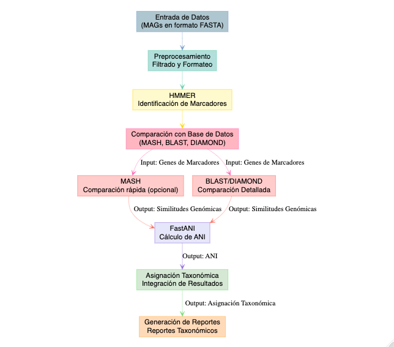

Asignación taxonómica
GTDB-tk
GTDB-Tk es una herramienta que asigna taxonomía a genomas utilizando la base de datos GTDB (Genome Taxonomy Database). Basado en árboles filogenéticos y medidas de ANI (Average Nucleotide Identity), GTDB-Tk clasifica genomas bacterianos y arqueanos, proporciona una taxonomía coherente y actualizada. Se utiliza mucho en el análisis de genomas y metagenomas.

Recordemos que ya tenemos un set de bins refinados y desreplicados. Ahora vamos a asignarles identidad taxonómica, para ello vamos a correr GTDB-tk
conda activate gtdbtk-2.4.0El directorio de resultados para gtdbtk ya lo tienes en tu carpeta de resultados. Para colocar los bins refinados y renombrados ejecuta el script `src/copiar_renombrarbins.sh` :
nano src/copiar_renombrarbins.sh#!/usr/bin/bash
mkdir -p results/10.gtdbtk/48h/bins
destination_dir="results/10.gtdbtk/bins"
count=1
for file in $(ls results/09.drep/dereplicated_genomes/*.fasta); do
new_name=$(printf "48hBin%02d.fasta" "$count")
cp "$file" "$destination_dir/$new_name"
count=$((count + 1))
donegtdbtk toma aprox 1 h 15 min por lo que el resultado final se encuentra en el directorio y archivo: results/10.gtdbtk/48h/gtdbtk.bac120.summary.tsv que se copió desde el inicio.
El siguiente script de slurm es sólo el ejemplo de como se corrió y te será útil para tu ejercicio más adelante o para tus propios datos
nano src/10.gtdbtk_48h.slurm#!/bin/bash
#SBATHC -J gtdbtk
#SBATCH -t 0
#SBATCH -n 6
#SBATCH -N 1
#SBATCH -e outs/10.gtdbtk48.err
#SBATCH -o outs/10.gtdbtk48.out
#SBATCH --export=ALL
#SBATCH -p q2
#cuando le pongo limite de memoria me marca slurmstepd: error: Exceeded job memory limit
export LC_ALL=en_US.UTF-8
# 01. Definimos el directorio de entrada y salida
out="results/10.gtdbtk/48h/"
input="results/10.gtdbtk/48h/bins/"
# 02. Definimos el directorio donde se escribe una subsalida de mash
db="$out/classify/ani_screen/intermediate_results/mash/"
# ahora si corremos gtdbtk
gtdbtk classify_wf --genome_dir $input --out_dir $out --cpus 6 -x fasta --mash_db $dbRevisen la tabla de resultados de GTDB-Tk (
gtdbtk.bac120.summary.tsv). Identifiquen el MAG con la mayor calidad (mayor completitud y menor contaminación). ¿Qué taxonomía tiene?Ahora, busquen el MAG con la taxonomía más interesante o inesperada. ¿Hay algún género o familia que no esperarían encontrar en el pozol?
Crea una tabla que se llame Metadatos.tsv dentro del directorio de resultados de GTDB-tk que incluya el nombre del bin y la clasificación taxonómica.
1) Cambia el encabezado del nombre del bin: user_genome por Bin_name
2) Elimina classification y asegurate de que los niveles taxonómicos estén separados por tabulador. A cada columna de los niveles taxonómicos agregale su encabezado correspondiente: Domain, Phylum, Class, Order, Family, Genus, Species
echo -e Bin_name”\t”Domain”\t”Phylum”\t”Class”\t”Order”\t”Family”\t”Genus”\t”Species > Metadatos.tsv
cut -f1,2 gtdbtk.bac120.summary.tsv | grep -v “classification” | sed ‘s/;/\t/g’ >> Metadatos.tsv